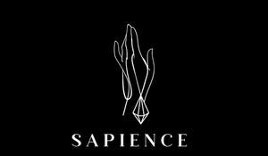

Trade Mark Journal No.2025/014 4 April 2025
UK00004171612 11 March 2025 (3,4,14,25,28)

- Class 3
- Skincare cosmetics; Anti-aging skincare preparations; Anti-aging moisturizers used as cosmetics; Skincare preparations; Moisturisers [cosmetics]; Skin moisturizers used as cosmetics; Anti-aging moisturizers; Anti-ageing moisturiser; Suncare lotions [for cosmetic use]; Cosmetic moisturisers; Anti-ageing creams [for cosmetic use]; Cosmetic products in the form of aerosols for skincare; Moisturising skin lotions [cosmetic]; Anti-aging creams [for cosmetic use]; Beauty serums; Acne cleansers, cosmetic; Facial moisturisers [cosmetic]; Non-medicated skincare preparations; Skin cleansers [cosmetic]; Moisturising skin creams [cosmetic]; Suncare lotions; Beauty serums with anti-ageing properties; Facial creams [cosmetics]; Anti-aging creams; Anti-ageing creams; Skin moisturisers; Anti-ageing serums for cosmetic purposes; After-sun oils [cosmetics]; Skin care lotions [cosmetic]; Skin care cosmetics; Beauty lotions; Skin moisturizer; Skin moisturiser; Skin moisturizers; Skin balms [cosmetic]; Beauty care cosmetics; After-sun lotions [for cosmetic use]; Moisturisers; Skin care creams [cosmetic]; Cosmetic creams for skin care; Skin recovery creams [cosmetics]; Skin creams [for cosmetic use]; Sunscreen creams [for cosmetic use]; Cosmetics; Cosmetic creams for the skin; Skin creams [cosmetic]; Facial cleansers [cosmetic]; Anti-wrinkle creams [for cosmetic use]; Cosmetic nourishing creams; Skin masks [cosmetics]; Moisturiser; Skin cleansers; Self-tanning preparations [cosmetics]; Moisturizers; Cleansing creams [cosmetic]; Skin moisturizer masks; Anti-ageing serum; Hairstyling serums; Cosmetic facial lotions; Facial lotions [cosmetic]; Facial moisturizers; Exfoliants for the care of the skin; Moisturising body lotion [cosmetic]; Beauty creams; Skin fresheners [cosmetics]; Skin lotions; Lotions for the skin; Sunscreens [for cosmetic use]; After-sun milks [cosmetics]; Skin cleansing lotion; Skin toners [cosmetic]; Body creams [cosmetics]; Sunscreen [for cosmetic use]; Hair care creams [for cosmetic use]; Skin whitening creams; Tanning oils [cosmetics]; Cosmetic hair lotions; Facial creams [cosmetic]; Facial creams [for cosmetic use]; Sun care lotions [for cosmetic use]; Skin make-up; Exfoliating creams; Suntan lotion [cosmetics]; Skin cleansers [non-medicated]; After-sun milk [cosmetics]; Hair moisturisers; Skin whitening preparations [cosmetic]; Moisturizing creams; Cosmetic products for the shower; Creams for tanning the skin; Aromatherapy creams; Skin hydrators; Creams (Cosmetic -); Cosmetic creams; Anti-aging cream; Organic cosmetics; Skin hydrators for cosmetic purposes; Aromatherapy lotions; Night creams [cosmetics]; Cleansing lotions; Hair care serums; Facial gels [cosmetics]; After-sun lotions; Facial cleansers; Moisturising creams; Anti-wrinkle creams; Self-tanning preparations [cosmetic]; Hair cosmetics; Hair moisturizers; Skin creams; Creams for the skin; Moisturising gels [cosmetic]; Moisturizing preparations for the skin.
- Class 4
- Candles; Candles and wicks for candles for lighting; Tealight candles; Votive candles; Scented candles; Wicks for candles; Nightlights [candles]; Candles for use as nightlights; Candles for lighting; Fragranced candles; Wicks for candles for lighting; Candles and wicks for lighting; Tallow candles; Candles in tins; Candle torches; Perfumed candles; Candles (Perfumed -); Soy candles; Christmas lights [candles]; Candles for use in the decoration of cakes; Table candles; Tea light candles; Church candles; Fruit candles; Floating candles; Aromatherapy fragrance candles; Beeswax for use in the manufacture of candles; Candles for night lights; Wax for making candles; Candle wax; Musk scented candles; Tealights; Grave candles, non-electric; Christmas tree decorations for illumination [candles]; Bougies in the nature of wax candles; Christmas tree candles; Candles (Christmas tree -); Christmas tree ornaments for illumination [candles]; Candles for absorbing smoke; Candle assemblies; Wicks for lighting; Special occasion candles; Wicks for oil lamps; Wax lights; Lamp wicks; Wicks (Lamp -); Wax for lighting; Tea lights; Candles containing insect repellent; Tapers for lighting.
- Class 14
- Jewellery; Necklaces [jewellery]; Brooches [jewellery]; Jewellery brooches; Jewellery, including imitation jewellery and plastic jewellery; Pendants [jewellery]; Bracelets [jewellery]; Brooches [jewellery, jewelry (Am.)]; Ornaments [jewellery]; Amulets being jewellery; Amulets [jewellery]; Pearls [jewellery]; Trinkets [jewellery]; Necklaces [jewellery, jewelry (Am.)]; Jewelry; Fashion jewellery; Gold jewellery; Lockets [jewellery]; Brooches [jewelry]; Jewelry brooches; Brooches being jewelry; Jade [jewellery]; Clasps for jewellery; Charms [jewellery]; Charms for jewellery; Jewellery charms; Enamelled jewellery; Ornaments [jewellery, jewelry (Am.)]; Pearls [jewellery, jewelry (Am.)]; Items of jewellery; Jewellery items; Costume jewellery; Decorative brooches [jewellery]; Amulets [jewellery, jewelry (Am.)]; Rings being jewellery; Trinkets [jewellery, jewelry (Am.)]; Bracelets [jewellery, jewelry (Am.)]; Pewter jewellery; Rings [jewellery]; Jewellery stones; Cloisonné jewellery [jewelry (Am.)]; Wristlets [jewellery]; Cloisonné jewellery; Cloisonne jewellery; Charms [jewellery, jewelry (Am.)]; Lockets [jewellery, jewelry (Am.)]; Chains [jewellery, jewelry (Am.)]; Jewellery products; Rings [jewellery, jewelry (Am.)]; Ivory [jewellery, jewelry (Am.)]; Shoe jewellery; Precious jewellery; Crucifixes as jewellery; Necklaces [jewelry]; Agate as jewellery; Pins [jewellery, jewelry (Am.)]; Jewellery chains; Chains [jewellery]; Ivory jewellery; Jewellery chain; Jewellery in semi-precious metals; Medallions [jewellery, jewelry (Am.)]; Jewellery caskets; Paste jewellery [costume jewelry (Am.)]; Paste jewellery [costume jewelry [Am.]]; Gold plated brooches [jewellery]; Pins [jewellery]; Pins being jewellery; Jewellery boxes; Amber pendants being jewellery; Jewellery for personal adornment; Pendants [jewelry]; Imitation jewellery; Cabochons for making jewellery; Jewellery chain of precious metal for necklaces; Amberoid pendants being jewellery; Body jewellery; Gold thread [jewellery, jewelry (Am.)]; Beads for making jewellery; Jewelry (Paste -) [costume jewelry]; Paste jewelry [costume jewelry]; Jewellery incorporating diamonds; Silver thread [jewellery, jewelry (Am.)]; Fake jewellery; Personal jewellery; Jewellery for pets; Jewellery in non-precious metals; Plastic costume jewellery; Imitation jewellery ornaments; Hat jewellery; Clips of silver [jewellery]; Crosses [jewellery]; Facial jewellery; Jewellery findings; Jewellery in the form of beads; Sterling silver jewellery; Paste jewellery; Jewellery (Paste -); Jewellery incorporating pearls; Bracelets [jewelry]; Amulets [jewelry]; Pearls [jewelry]; Jewellery articles; Articles of jewellery; Jewellery made from gold; Jewellery made from silver; Diamond jewelry; Jewellery chain of precious metal for anklets; Wire of precious metal [jewellery, jewelry (Am.)]; Jewellery containing gold; Lockets [jewelry]; Dress ornaments in the nature of jewellery; Clasps for jewelry; Jewellery in precious metals; Jewellery of precious metals; Jewelry stickpins; Jewellery chain of precious metal for bracelets; Trinkets [jewelry]; Threads of precious metal [jewellery, jewelry (Am.)]; Artificial jewellery; Jewellery for personal wear; Decorative pins [jewellery]; Jewellery fashioned from non-precious metals; Jewellery cases; Charms [jewelry]; Jewelry charms; Charms for jewelry; Body costume jewellery; Jewellery rope chain for necklaces.
- Class 25
- Socks; Socks and stockings; Slipper socks; Anklets [socks]; Toe socks; Ankle socks; Footless socks; Woollen socks; Trouser socks; Sweat-absorbent socks; Non-slip socks; Anti-perspirant socks; Bed socks; Thermal socks; Yoga socks; Men's socks; Tennis socks; Socks for men; Sports socks; Water socks; Pop socks; Inner socks for footwear; Sock suspenders; Men's dress socks; Knitted underwear; American football socks; Japanese style socks (tabi); Insoles [for shoes and boots]; Insoles for shoes and boots; Knitted baby shoes; Bootees (woollen baby shoes); Knee-high stockings; Japanese style socks (tabi covers); Slippers; Shoes; Knitted gloves; Babies' pants [underwear]; Valenki [felted boots]; Socks for infants and toddlers; Leggings [trousers]; Tongues for shoes and boots; Pants; Underwear; Boy shorts [underwear]; Fleece shorts; Anti-sweat underwear; Nappy pants [clothing].
- Class 28
- Game cards; Cards [games]; Trading cards [card game]; Playing cards and card games; Card games; Karuta playing cards (Japanese card game); Game boards for trading card games; Trading cards for games; Trading card games; Tarot cards [playing cards]; Playing cards; Cards (Playing -); Japanese playing cards; Cases for playing cards; Dice games; Games; Chess games.
BLEND8BLOOM LIMITED